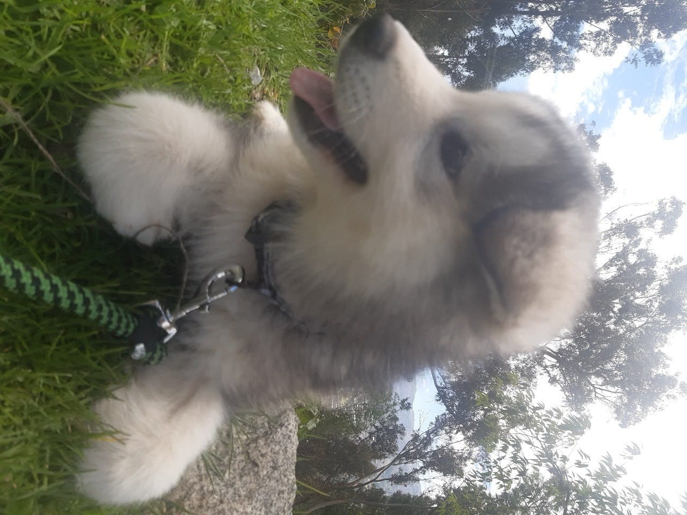
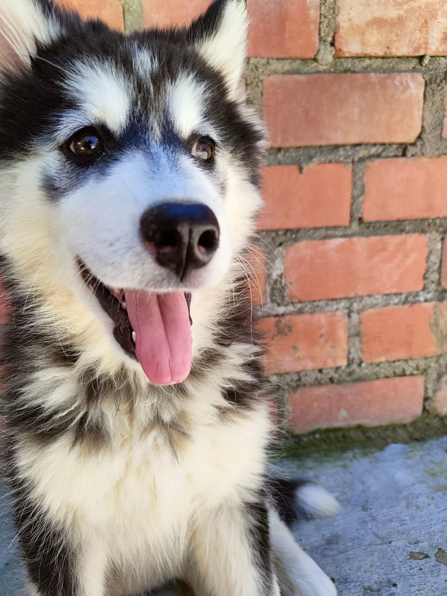

Los Alaskan Malamute son perros majestuosos, conocidos por su fuerza física, inmensa lealtad y energía inagotable. Originarios de los paisajes nevados más duros, hoy en día son el mejor soporte emocional (y los verdaderos dueños del setup) detrás de cada stream y cada línea de código.

Balto es pura nobleza y energía. Siempre está atento a todo lo que pasa a su alrededor y se asegura de recordarme con un buen aullido cuándo es hora de apagar la PC para salir a jugar un rato.

La dueña absoluta del cuarto. Laska tiene el superpoder de exigir cariño justo a la mitad de una partida decisiva y de saber exactamente en qué silla acomodarse para salir frente a la cámara.